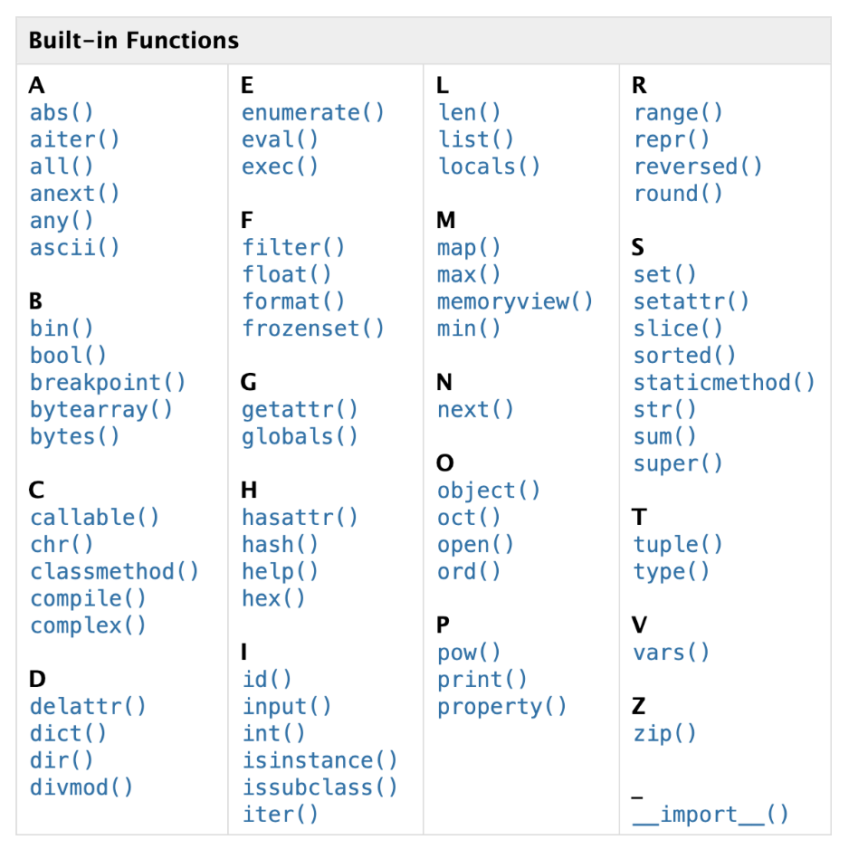

Code Cell#
You can write and execute Python code in code cells.
An arrow on the left of a code cell allows you to run the code.
Additionally, you can use the shortcut
Shift+Enterto execute the code.A number in a square bracket on the left of executed code cells represents the execution order of that code cell.
Warning: The order of a code cell in the notebook and its execution order can differ if you run another code cell above it
print() function#
Displays output on the screen.
In Colab notebooks, only the variable value in the last line is automatically displayed.
To display any value in another line, you need to use the print() function.
# displays 5
print(5)
5
# notebook only displays the value in the last line of the code cell
5-1 # not displayed
3+7 # displayed
10
# print() displays the outputs
print(5-1) # displayed
print(3+7) # displayed
4
10
Numbers#
You can use integers (…,-3,-2,-1,0,1,2,3,….) and decimal numbers called floats in a code cell.
Algebraic Operations#
You can perform algebraic operations in code cells.
The multiplication operator is
*(asterisk).The division operator is
/(forward slash).
print(5+9)
14
print(10.4-4.5)
5.9
print(5*6)
30
print(10/2)
5.0
Strings#
Strings are sequences of characters.
They can be written inside single quotes, double quotes, triple single quotes, or triple double quotes.
print('Hello')
Hello
print("Hello")
Hello
print('''Hello''')
Hello
print("""Hello""")
Hello
'3' # string '3 'is not a number, it is only a character
'3'
# ERROR: you are trying to add a string (character) '3' and a number (5)
'3'+5
String Operations#
String + String: combines two stringsString * IntegerorInteger * String: makes copies of the stringIntegermany times.
# concatenation: combining two strings
print('Hello' + 'World')
HelloWorld
# repetition: # 10 Ms
print('M'*10)
MMMMMMMMMM
Booleans#
There are only two boolean values:
TrueandFalse.They indicate whether a condition is valid or not.
Booleans will be covered in Conditionals chapter with details.
Built-in functions#
There are functions readily available for use in a notebook.
There is no need to import these built-in functions from external sources.
You can find the list of built-in functions in the following link.

# absolute value function
print(abs(-7))
7
# maximum of a list of numbers
print(max(3,-4,0,9,2))
9
# minimum of a list of numbers
print(min(3,-4,0,9,2))
-4
# sum of a list of numbers in a square bracket
print(sum([3,5,2]))
10
# rounding to the nearest hundreth
print(round(3.4678, 2))
3.47
# notebook only displays the value in the last line of the code cell
5-1 # not displayed
3+7 # displayed
10
# print() displays the outputs
print(5-1) # displayed
print(3+7) # displayed
4
10
Indentation#
Indentation refers to the spaces at the beginning of a code line.
Python uses indentation to indicate a block of code.
Do not use indentation unless you need it.
Indentation refers to the spaces at the beginning of a code line.
Python uses indentation to group the block of code.
Only use indentation when necessary.
# ERROR: Indentation error
# There should not be space at the beginning
print(3+1)
print(5+6)
Import Modules/Packages/Libraries#
Only very commonly used, simple functions are available in a notebook by default.
Python has a vast set of modules, packages and libraries where one can find numerous functions.
For instance, the
mean()function is not available by default in a notebook.
# ERROR: 'mean' is not defined
mean(4,8)
The mean function can be imported from the
statisticsmodule ornumpylibrary.You can import a package and call any function from it using the
package.method.You can import only the function(s) you need from the package using the
from PACKAGE import METHOD.Additionally, you can import a package and rename it for shorter usage by employing the
import PACKAGE as ABBREVIATION.
import statistics # import whole package
statistics.mean([4,8]) # call mean method from statistics package
6
from statistics import mean # import only mean method
mean([4,8]) # call mean method
6
import statistics as st # import whole statistics package as st
st.mean([4,8]) # call mean method from st package
6
import numpy as np # import numpy package as np
np.mean([4,8]) # call mean method from np package
6.0
You can call mathematical constants and functions from the
mathmodule.Functions in modules are also referred to as methods.
The built-in
dir()andhelp()functions display the lists of constants (attributes) and functions (methods).
# displays all functions and constants in math module
import math
dir(math)
# displays all functions and constants in math module with explanation
import math
help(math)
import math
dir(math)
['__doc__',
'__file__',
'__loader__',
'__name__',
'__package__',
'__spec__',
'acos',
'acosh',
'asin',
'asinh',
'atan',
'atan2',
'atanh',
'cbrt',
'ceil',
'comb',
'copysign',
'cos',
'cosh',
'degrees',
'dist',
'e',
'erf',
'erfc',
'exp',
'exp2',
'expm1',
'fabs',
'factorial',
'floor',
'fmod',
'frexp',
'fsum',
'gamma',
'gcd',
'hypot',
'inf',
'isclose',
'isfinite',
'isinf',
'isnan',
'isqrt',
'lcm',
'ldexp',
'lgamma',
'log',
'log10',
'log1p',
'log2',
'modf',
'nan',
'nextafter',
'perm',
'pi',
'pow',
'prod',
'radians',
'remainder',
'sin',
'sinh',
'sqrt',
'tan',
'tanh',
'tau',
'trunc',
'ulp']
print(math.pi)
3.141592653589793
# ln(10)
print(math.log(10)) # natural log 10
2.302585092994046
The
datetimemodule contains methods that can be used for working with time and date
import datetime
print(datetime.datetime.now()) # date and time now
2024-01-14 01:02:05.575999
You can use the
calendarmodule to display a monthly calendar.
import calendar # import calender module
print(calendar.month(1900, 1)) # display Jan month of 1900
January 1900
Mo Tu We Th Fr Sa Su
1 2 3 4 5 6 7
8 9 10 11 12 13 14
15 16 17 18 19 20 21
22 23 24 25 26 27 28
29 30 31
You can use the
randommodule to generate random numbers or make random choices.
import random
random.randint(1,10) # choose a random integer between 1 and 10
8
random.choice(['a','b','c']) # choose a random element from a list
'c'
Magic Methods#
The methods in
dir(math)enclosed by double underscores__are referred to as magic functions.These functions operate in the backend and are not intended for direct user use.
While it is still possible to use them, there is usually a more user-friendly alternative.
For example, if you examine
dir(int), you will find the__add__method, which handles the addition operation internally, corresponding to the use of the + operator.
number = 3
print(number + 5)
print(number.__add__(5)) # same as 3+5
8
8
Images#
You can import images from a website using the IPython library.
Adjust the size of the image by utilizing width and height parameters.
from IPython.core.display import Image
Image('https://www.python.org/static/community_logos/python-powered-h-100x130.png',width=100,height=100)

Youtube Video#
You can import YouTube videos using the unique ID number.
The ID number of a YouTube video can be found in the video’s URL directly after the = sign
ID number of https://www.youtube.com/watch?v=rNgswRZ2C1Y is
rNgswRZ2C1Y
from IPython.lib.display import YouTubeVideo
YouTubeVideo('rNgswRZ2C1Y', width=800, height=300)
Comments#
Use
#to add notes to your program, explaining the purpose of the code.Comments are not executed but serve as explanations.
Additionally, you can place comments to the right of the code.
Comments make the code easier to read and understand.
Comments help team members understand each other’s code.